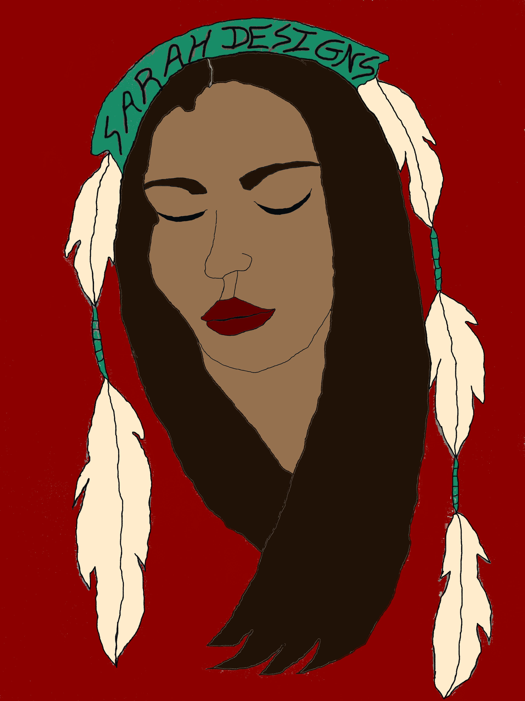
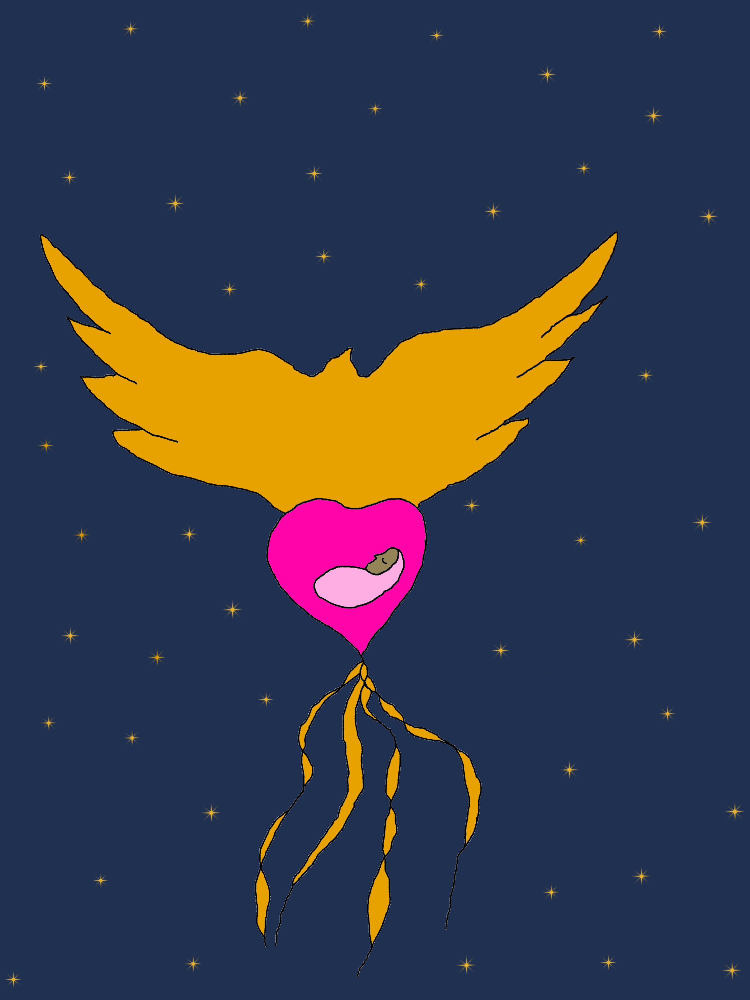
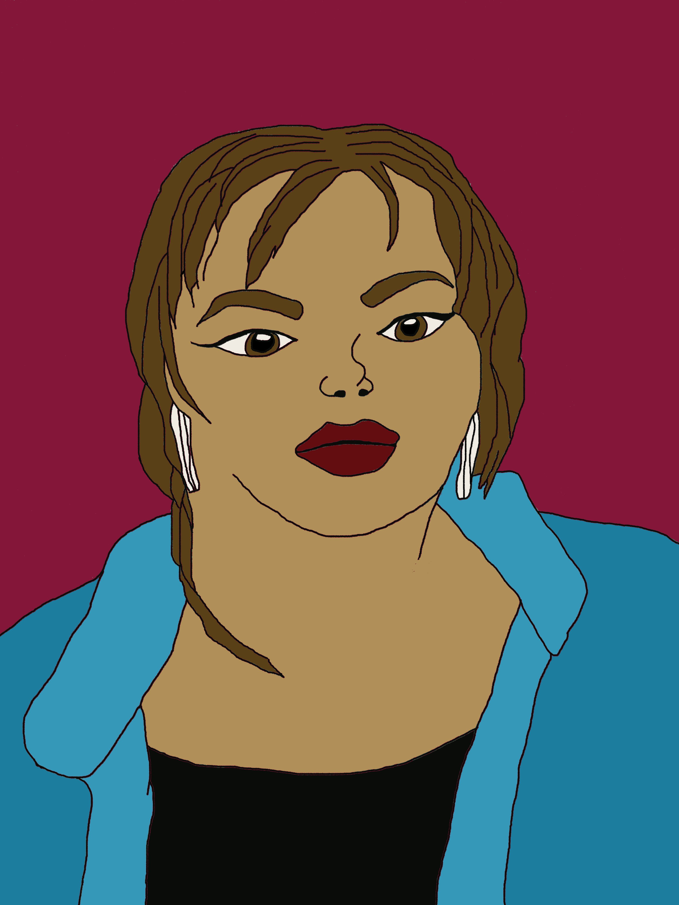

Hello my name is Sarah Godin. I am from Chakastaypasin Band Cree Nation in Saskatchewan. I currently reside in Edmonton Alberta. Thank you for viewing my page. I am currently looking for a full time employment with a Digital Art company. Whilst in the IndigiTech program, I had the opportunity to work on a few projects using the Krita, Figma applications.
In addition, I was able to create a webpage for an artist named Summer Tweenish. This was suppose to help promote her art increase visibility help her with bookings.
I look forward to hearing back from you to further discuss my candidacy for this role. Thank you for your time.
Indigenous Friends Association, IndigiTech Toronto, ON
Sept-2022 Jan-2023
Indigenous Knowledge Education; Digital Art; Technology; UX Design/Research; Web Development Developed website for Indigenous Musician/Artist/Producer Conducted user-interviews, research, and designed website & posters to support the teaching/learning of Indigenous Cultural Knowledge
Employabilities Edmonton, AB
April 2017 - September 2017
Proficient in Windows 7 and Microsoft Office Suite 2010 WHMIS Service Best Certificate First Aid
Certifications
Intro to Web Development (Issued by Lighthouse Labs, 2022) User Experience, UX Research/Design (Issued by Jumping Elephants, 2022) Future Proof Skills (Issued by Wavemakers, 2022)
Skills
Experience with front end development
Java, CSS, HTML, UX Design
POS system operations
Policy Procedure Adherence
Loss Prevention Goals Monitoring
Potrait logo
Creation Story
Summer Potrait
www.Linkedin.com/in/sarah-c-godin-
sarah.c.godin@gmail.com